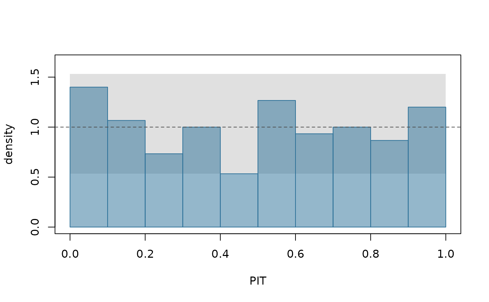

Probability integral transforms of observed outcomes
Source:R/ilm_pit.R, R/zzz-iml-aliases.R
ilm_pit.RdThe probability integral transform (PIT) of an outcome is where it falls in
its own predictive distribution: F(y), the predicted probability of a value
at or below the one observed (Gneiting, Balabdaoui and Raftery 2007, section
3.1, p. 251). If the predictive distributions are right, the PITs of new
observations are uniform on 0 to 1: the PITs' long-run uniformity is
equivalent to probabilistic calibration (Theorem 2, p. 252), and checks of
it have been a corner-stone of forecast evaluation (p. 252). In a histogram
of PITs, a U shape
often means predictive distributions too narrow, a hump means intervals too
wide on average, and a triangle, sloping one way, means biased predictions
(p. 253).
Value
A numeric vector of PITs, one per row, with attribute randomised
saying whether they were randomised.
Discrete outcomes
For a count, a binary or an ordered outcome, F(y) jumps at each value, so
the plain PIT is not uniform even when the model is right. The PIT is then
randomised: drawn uniformly between F(y - 1) and F(y). That is uniform
exactly when the predictive distribution is correct, with no discreteness
artefact. The randomisation is the only random step, and seed fixes it.
References
Gneiting, T., Balabdaoui, F. and Raftery, A. E. (2007). Probabilistic forecasts, calibration and sharpness. Journal of the Royal Statistical Society B 69, 243-268. Section 3.1, "Assessing probabilistic calibration", pp. 251-253.
See also
ilm_plot_pit() for the histogram;
ilm_calibration() for a verdict on
calibration, which tests the PITs' uniformity.
Examples
set.seed(1)
d <- data.frame(x = rnorm(300))
d$y <- rpois(300, exp(1 + 0.4 * d$x))
train <- d[1:150, ]; test <- d[151:300, ]
fit <- illume::ilm_model(y ~ x, data = train, family = "poisson", verbose = FALSE)
u <- ilm_pit(ilm_predict(fit, test, target = "response", nsim = 200), test$y)
attr(u, "randomised")
#> [1] TRUE
ilm_plot_pit(u)
